ارائهٔ نهایی محصول · از فرضیه تا نسخهٔ 5.15
کشف مسئله · مصاحبه · بنچمارک · فرضیهٔ ارزش · نسخهٔ اول
تست اولیه · فاصلهٔ ارزش · چالشِ اعتماد · نقطهٔ چرخش · از منطق به محصول
معماری تجربه · انتقال ارزش · تکامل نسخهها · محصول امروز
v4.5 در برابر v5.15 · صفحهبهصفحه · آنچه باید عوض شود
تورم، آرام میخورد
تحریم و بحران، یکشبه
هر واسطه، یک ریسکِ تازه
«وقتی لازم شد، میرسم؟»
در بحران، آدمها یک سبدِ بقا و اختیار میسازند؛ نه فقط سرمایهگذاری.
فاز یک · ۲۰ مصاحبهٔ عمیق و بنچمارک در ۴ محور
اعتمادِ امروز انسانی است؛ نه نهادی.
در مبالغ بزرگ، مسئله «دفاعپذیری» است.
بعضی مشاور نمیخواهند؛ اجرا میخواهند.
حفظ ارزش بعد از تبدیل؟
خرج بیرون مالکیتِ ثالث
سرعت بیدفاع
دسترسی مسدودی
انتقال قانونی فقط خانواده
راهنمایی بیاجرا
دروازهٔ اول: شروع با Mass Affluent؛ HNWI مقصد است، نه شروع.
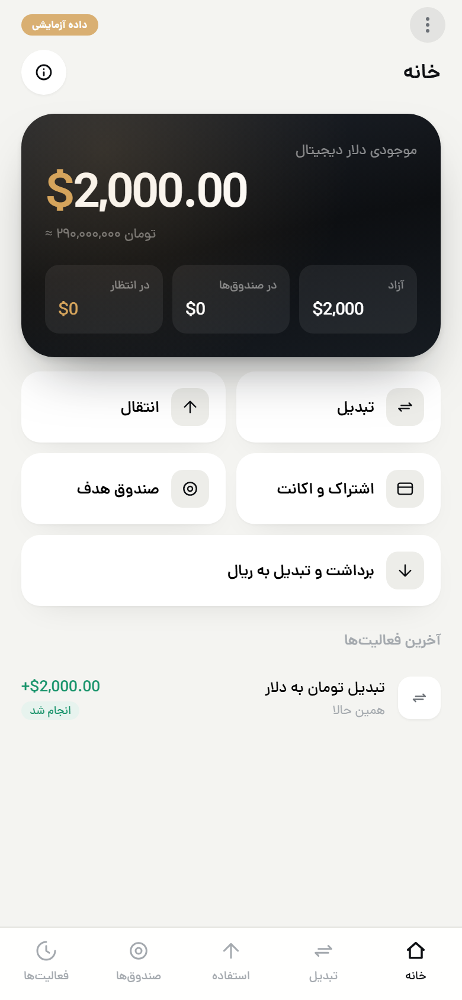
پنج مسیرِ سند WS0
تبدیل · انتقال · اشتراک · صندوق
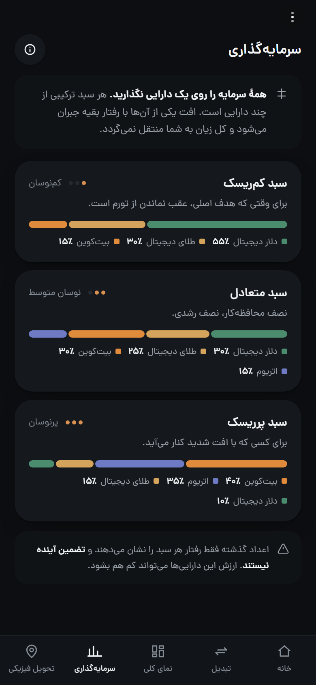
سه سبدِ سرمایهگذاری
ترکیب، پیش از انتخاب
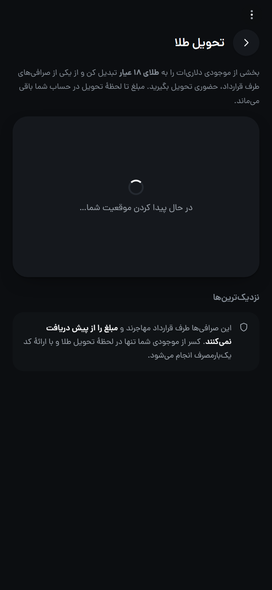
تحویل فیزیکی طلا
نقشه، صرافی، کد
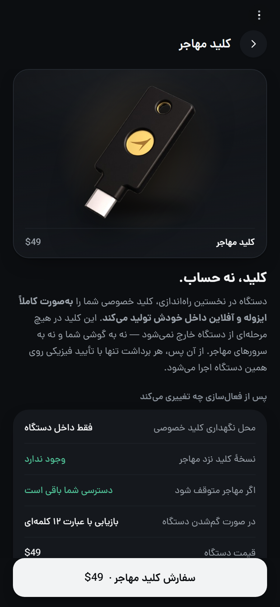
کلید شخصی
کلید، فقط در دستگاه
دو ایدهٔ بنیانگذار: «پولت را بگذار زیر بالشتت» و «هر وقت خواستی، مالت را عینی کن».
لینک را
باز کردند
به چهار سؤالِ
اول جواب دادند
وارد اپ
شدند
تبدیل را
تمام کردند
پاسخِ
کامل دادند
ویس
گذاشتند
نسخهٔ ۴٫۵ · ۶ تا ۱۷ مهر ۱۴۰۵ · ۲۱ جلسه، حدود ۱۸ نفر · کسانی که مشکل را قبلاً خودشان حل کردهاند؛ سختگیرترین مخاطب
تبدیل را خودشان، بیکمک تمام کردند
۵ نفر از ۹، چیز دیگری دیدند: یک اپ، یک صرافی، یک سودِ تضمینی.
۶ از ۹ نفر ۱ یا ۲ دادند؛ هیچکس ۵ نداد.
با این همه، ۷ از ۹ خواستند در جریان بمانند: نیاز هست؛ اعتماد نیست.
قابلیتها، از ۱۱ نفری که تبدیل کردند
آشیانه یک فهرستِ قابلیت دیده شد؛ نگهداریِ امن با کنترل و خروج، دیده نشد.
فقط ۲ از ۹ میدانستند پول کجاست. ۶ از ۱۶ نفر اول «امن یعنی چی؟» را باز کردند؛ جواب، در صفحهای جدا بود.
«صراف به من هیچ ضمانتی نمیدهد؛ همهچیز کاملاً شانسی است. ممکن است فردا همین آقایی که ۱۵ سال با او کار میکنم، توزرد از آب دربیاید.»
«من برای اعتماد به یک سیستم مالی، دنبال "شخصیت حقوقی" هستم. باید بدانم چه تبار و اعتباری پشت این کار است.»
«من به بانک ملی دلار دادم، ولی وقتی خواستم پس بگیرم به من ریال با نرخ دولتی داد! از نظر من این کلاهبرداری بود.»
«اصلاً اطمینان نمیکنم؛ ما به بابای خودمان هم اطمینان نکردیم و سند به نامش نزدیم، چه برسد به پلتفرم آنلاین.»
«اینجا ایران است؛ همیشه باید این پیه را به تنت بمالی که صراف کلاهبرداری کند یا دولت اموالش را ببندد.»
«شفافیت اعتمادساز است، اما شفافیتی که من هم آن را بفهمم؛ مدل جعبهٔ شیشهای.»
فاز یک · نقلها عیناً از «خروجی مصاحبهها» (بخش نقلقولهای طلایی)، فقط با اصلاح نگارشی
دلار واقعاً آنجاست؟
اگر حساب بسته شد، چه؟
هر وقت خواستم، برمیگردد؟
چقدر از پولم کم میشود؟
تصمیم دربارهٔ پولم با کیست؟
پشتِ این سرویس کیست؟
لندن، ۲۰۱۱ · از یک دلخوری شروع شد: کارمزدی که بانکها در نرخِ تبدیل پنهان میکردند.
نرخِ میانهٔ بازار نشان داده میشود؛ سود در نرخ پنهان نمیشود.
پیش از تأیید، دقیقاً پیداست چقدر کم میشود.
ابزارِ مقایسه با بانکها و رقبا، روی سایتِ خودش.
مجوزِ ناظرِ مالیِ بریتانیا، گزارشِ عمومی، و مشتریانی که سهامدارند.
دو دیتاسنتر در کییف و لویو، و انتقال به ابر؛ بیوقفه در جنگ.
۶٫۷۷ ← نزدیک ۸ میلیون مشتریِ فعالوقتی بانکها پول را نگه داشتند، حوالهگرها جایشان را گرفتند؛ حتی برای حقوق.
انتقالِ لیره، بدون کارمزدپسانداز به دلارِ دیجیتال؛ خرج به پزو با کارت.
پساندازِ دلاری، بدون حسابِ خارجیکارگزاریِ دارای مجوز و زیر نظرِ هیئت بازار سرمایهٔ ترکیه (SPK)؛ معاملات بورس استانبول با تسویهٔ Takasbank.
۳٫۵ میلیون کاربراز نارضایتیِ عمیق از بانکها شروع شد؛ ساده و روشن.
۱۰۰ میلیون مشتری · ۲۰۲۴پرداخت و انتقال در بازاری نقدمحور و بیاعتماد به نهادها.
بیش از ۱ میلیون کاربرالگو: هیچکدام با فهرستِ قابلیت شروع نکردند · عددها از گزارشهای رسمی یا اعلامِ خودِ شرکتهاست، نه حسابرسیِ مستقل
اعتماد انسانی است، نه نهادی؛ شش مانع، پیش از هر قابلیت.
میانهٔ اعتماد ۲ از ۵؛ اولین کلیک: «امن یعنی چی؟»
Wise · Monobank · Whish · Midas: اول اعتماد، بعد قابلیت.
«در چند جا نگهش دار؛ اگر یکی خراب شد، بقیه میمانند.»
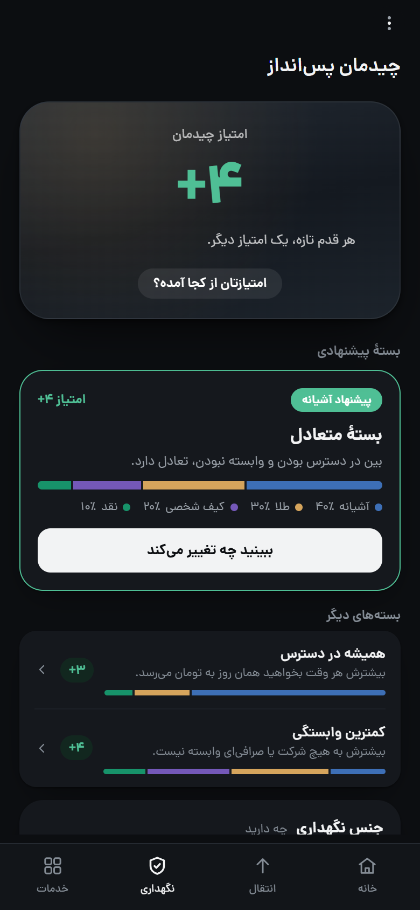
۱۲۳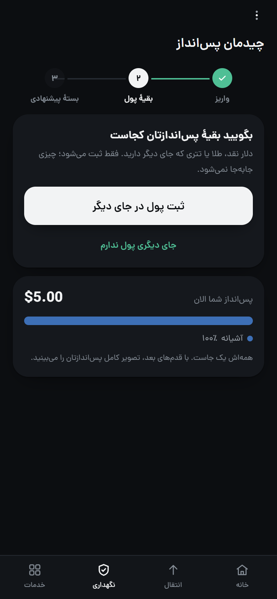
۴از صفر شروع؛ هر قدمِ درست +۱. «پخش کردن» قابل اندازهگیری شد.
یک ترکیبِ آماده: در دسترس بودن و وابسته نبودن، با هم.
بستههای دیگر و تغییرِ ترکیب؛ تصمیم با کاربر.
پولی که جای دیگر است هم ثبت میشود؛ تصویرِ کامل، نه فقط سهمِ ما.
مجوز با استعلام، قراردادِ نگهداری، گزارشِ ذخایر.
موجودیِ ذخیرهشده، برداشتِ حضوری، تماس با پشتیبانی.
تا خودتان تأیید نکنید، پولی جابهجا نمیشود.
هر محل یک ستون، با مبلغش؛ از اولین لمس.
خانه همهٔ پسانداز را نشان میدهد، هر جا که هست.
منبعِ هر عدد پیداست؛ شریک با نام؛ هرچه امضا نشده «در حال بررسی».
پیشنهاد هست، اجبار نیست.
ابزارهای کنارِ هسته؛ نه خودِ ارزش.
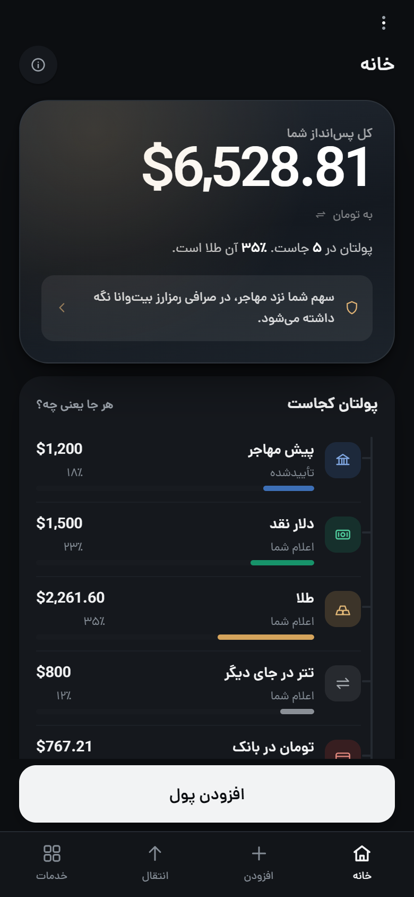
همهٔ جزئیات روی خانه
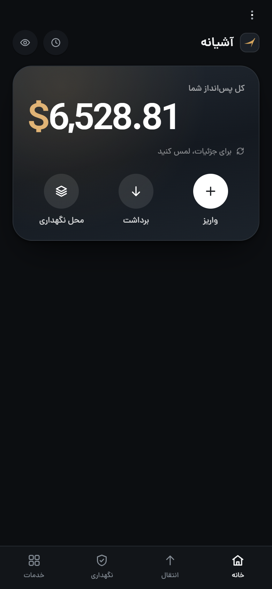
موجودی و سه اقدام؛ همین
موجودی · واریز، برداشت، محل نگهداری
امتیاز چیدمان · جنس و محل · بستهٔ پیشنهادی
به کاربر آشیانه، یا به صرافی
طلا · دلار نقد · کیف پول شخصی · مدارک
الهام: خانهٔ مینیمالِ بلو؛ امنسازی، جدا از سرمایهگذاری و انتقال.
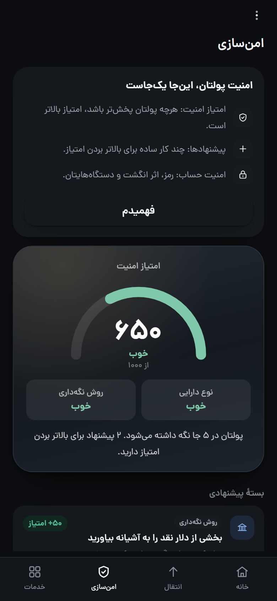
«۴۰۰ از ۱۰۰۰» ترسناک بود.
حالا از صفر، و هر قدمِ درست +۱.
دو پارامتر، یک تصویر:
جنسِ پول و محلِ نگهداری.
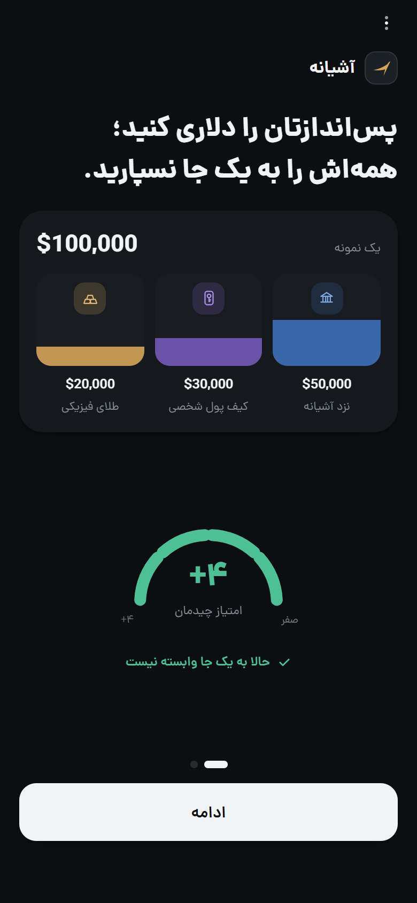
اولین لمس، خودِ ارزش است:
پخش کن و امتیاز را ببین.
v0
پنج مسیرِ WS0
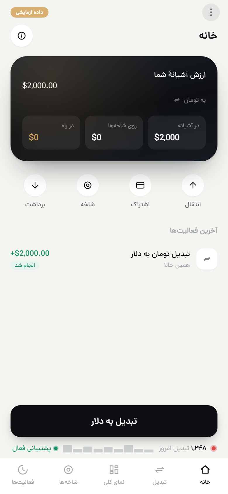
v1
الگوی بلو
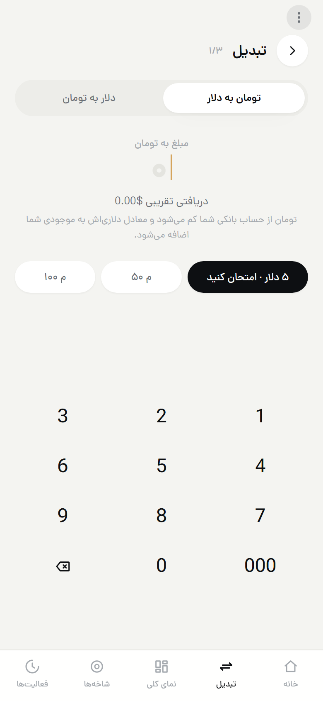
v2
تبدیلِ دوطرفه
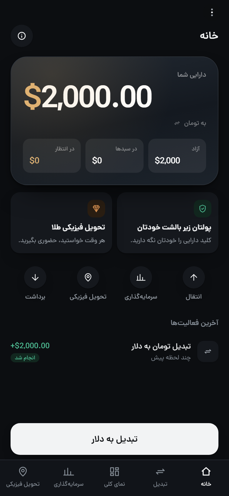
v3
سرمایهگذاری، طلا، کلید
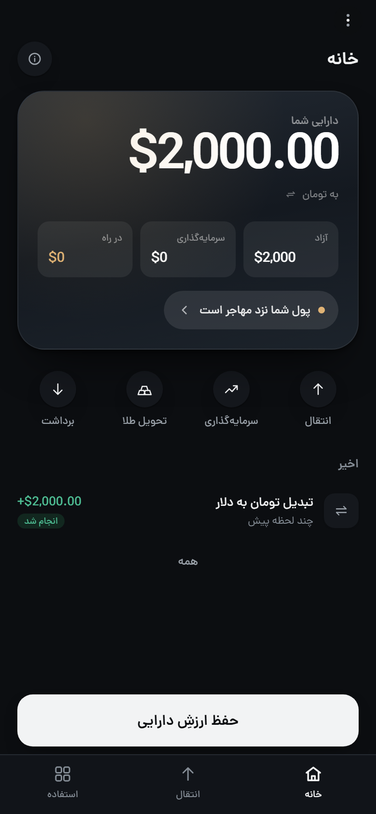
v4
بودجهٔ متن؛ سه تب
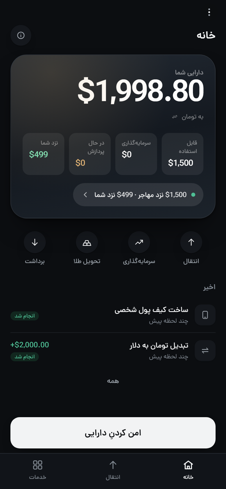
v4.5
کیف پول شخصی
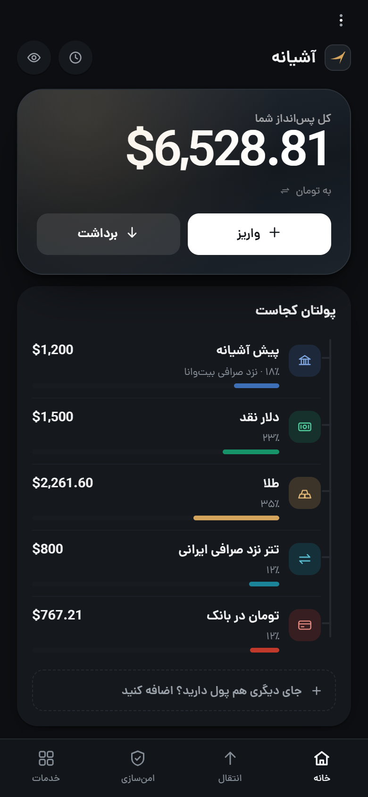
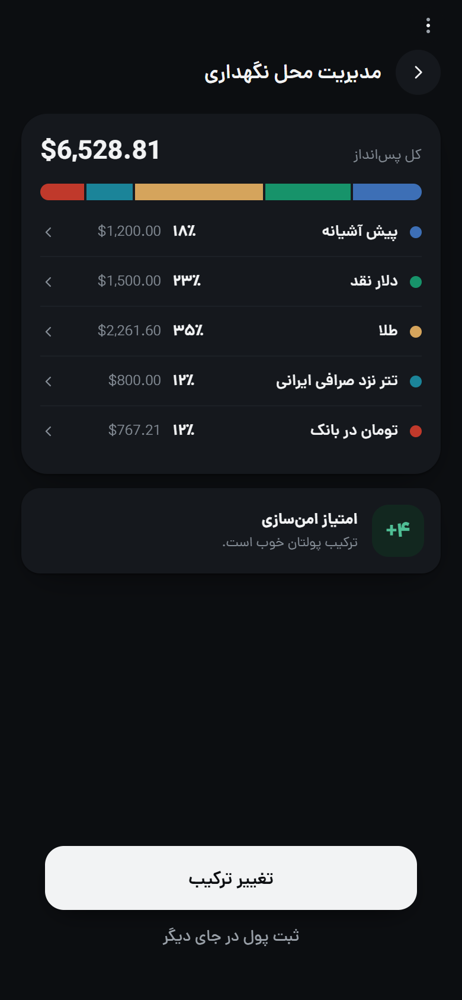
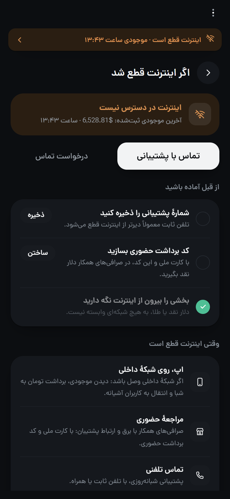
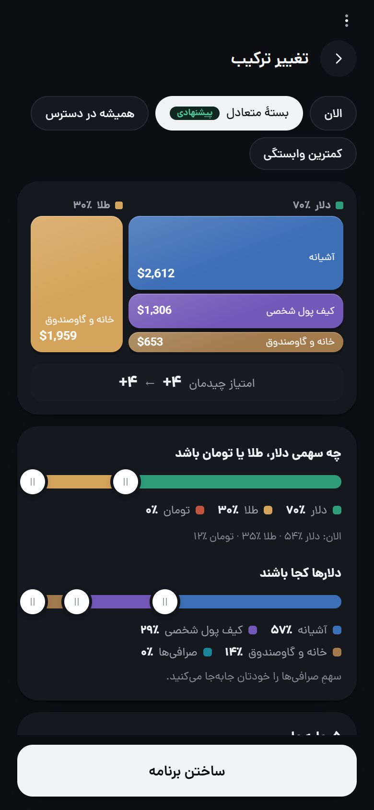
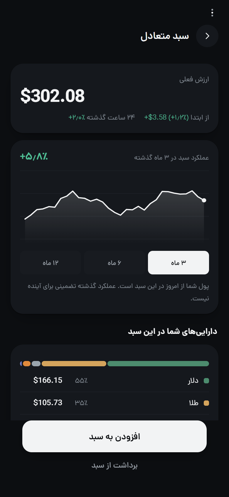
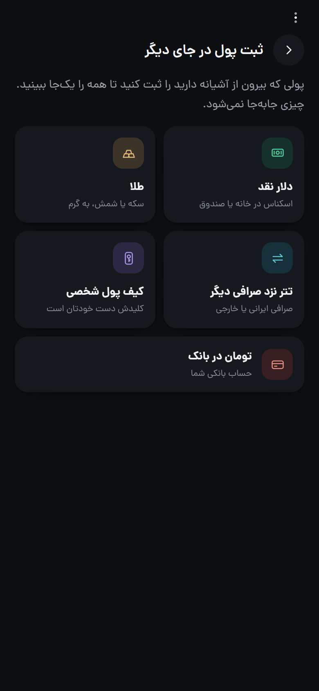
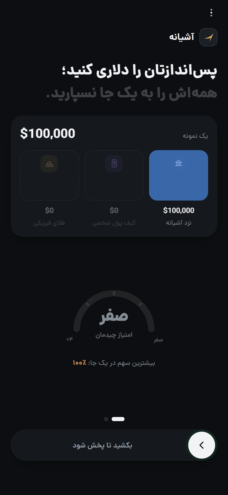
← نامِ «آشیانه» v5.1
← یک تبدیل، دوطرفه v2
← صندوقها حذف شدند v3
← «مدارک و مجوزها» v5.9
← جملهٔ حضانت از حالتِ واقعی v3
← جواب روی خودِ خانه v5.0
← امتیاز از صفر v5.4
← جزئیات، یک لمس عمیقتر v5.1 تا v5.11
تست یافتهٔ جلسههای کاربر · بازبینی فنی و بازبینی محصول نقدِ تیم پس از بررسیِ نسخه
تبدیل، انتقال، برداشت
جنس × محل · ثبت پولِ جای دیگر
بستهٔ پیشنهادی · برنامهٔ جابهجایی
طلا و دلار نقد · کیف شخصی · سبدها
قطع اینترنت · پشتیبانی · مدارک
شبیهسازی با پرسونا · صدای کاربرِ واقعی نیست · هیچ جلسهای به راندِ واقعی یا سرور ارسال نشد
هر پرسونا با سن، شغل، شهر، درآمد، تجربهٔ دلار و رمزارز و سبکِ اعتماد ساخته شده. برای سنجیدنِ منطقِ محصول و پیشبینیِ اصطکاک خوب است؛ برای پولِ واقعی، ماندگاری و تمایل به پرداخت، نه.
۱۳ مشاهدهٔ v4.5 از سوابقِ قبلی؛ بقیه آفلاین. هیچ جلسهای به راندِ واقعی یا سرور ارسال نشد.
در v4.5 هیچکس ۴ یا ۵ نداد. در v5.15، ۲۵ نفر ۴ دادند؛ هنوز هیچکس ۵.
منبع: دادهٔ مقایسهای ۴۲ پرسونا، v4.5 و v5.15 · شبیهسازی
میانهٔ اعتماد ۲ ← ۴
حدود یکسوم هنوز تبدیل نمیکنند: صرافِ آشنا، تصمیم با همسر، ترجیحِ طلای فیزیکی.
میانهٔ اعتماد ۲٫۵ ← ۴
برای کاربرِ آشنا اصطکاکِ مفهومی تقریباً نیست؛ ولی به کلِ بازار تعمیمپذیر نیست.
میانهٔ اعتماد ۲ ← ۳
تبدیل همان ماند: محصول برای همه بهزور جذاب نشد؛ نشانهٔ خوب.
۴ نفر از «فقط میخوانم» به «با مبلغ آزمایشی شروع میکنم» رفتند.
ردیفهای v4.5 از سوابقِ قبلی؛ v5.15 شبیهسازی · v4.5 v5.15
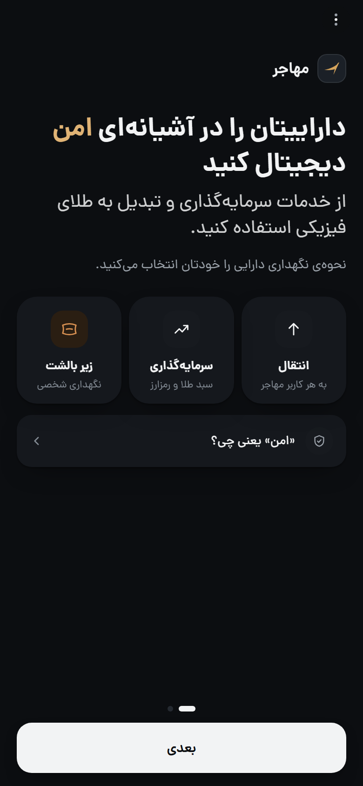
قولِ «آشیانهٔ امن»، و بلافاصله فهرستِ قابلیتها: انتقال، سرمایهگذاری، زیرِ بالشت.
یک جمله، یک کار: بکشید تا پخش شود؛ امتیاز همانجا زنده میشود.
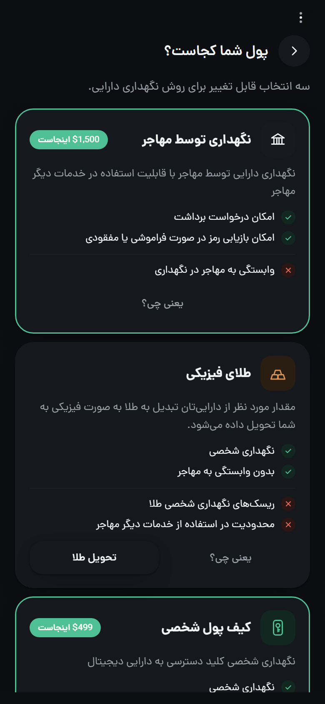
جای پول، در صفحهای جدا و سه کارتِ پرمتن.
جای پول، روی همان صفحهٔ اول: هر ستون یک محل، با مبلغش.
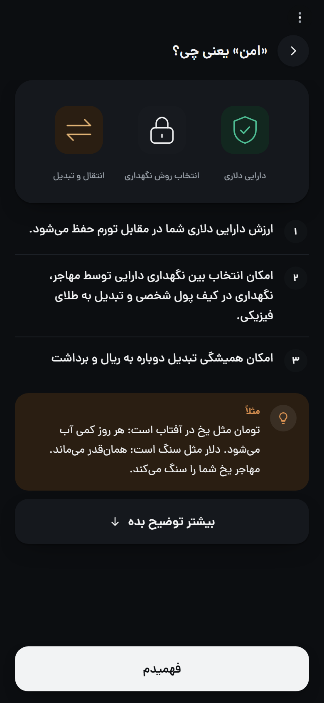
توضیحِ جدا، با استعاره: «تومان مثل یخ در آفتاب است».
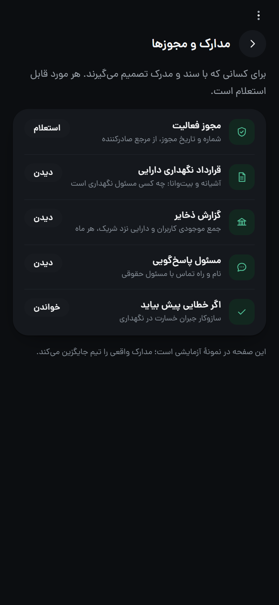
مدرک با نام، و کنارش یک کار: استعلام، دیدن، خواندن. مدارک هنوز نمونهاند.
اگر بفهمند، اعتماد میکنند.
نادرست بود.
فهم لازم است؛ کافی نیست. اعتماد، شاهد میخواهد.
«محصول حالا قابلفهمتر شده، اما برای پول واقعی هنوز شواهد اعتماد کافی ندارد.» · گزارش شبیهسازی
راندِ بعد: تستِ واقعی با سگمنت A — اعتماد پیش و پس از تجربه، با مبلغِ واقعیِ آزمایشی.
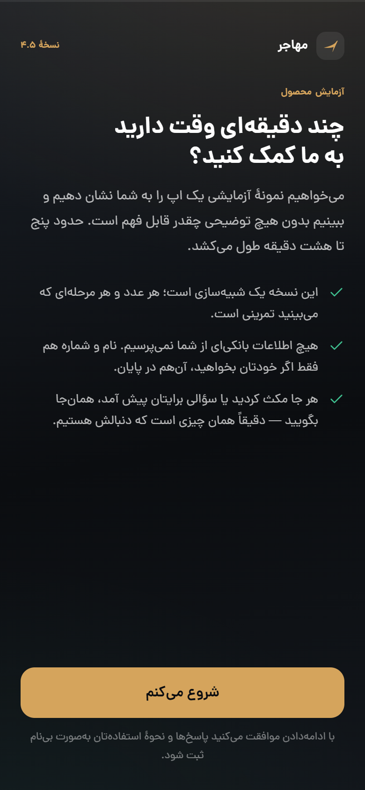
نسخه، راند و کانال در خودِ لینک
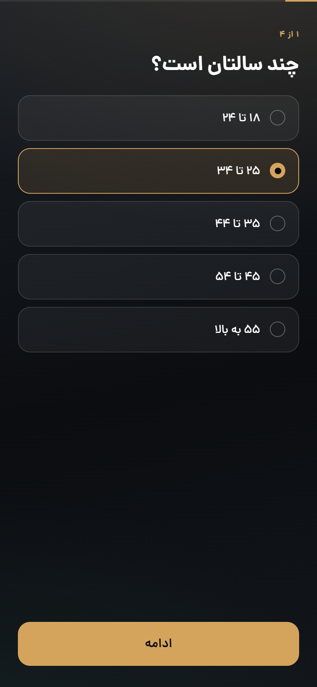
سن، تجربهٔ دلار، رمزارز، جای پسانداز
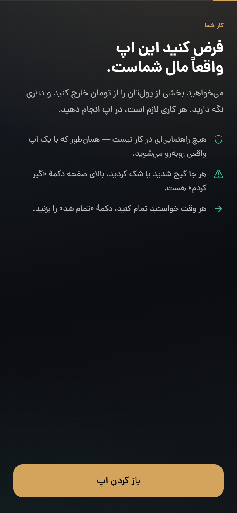
«بخشی از پولتان را از تومان خارج کنید»؛ بدون راهنما
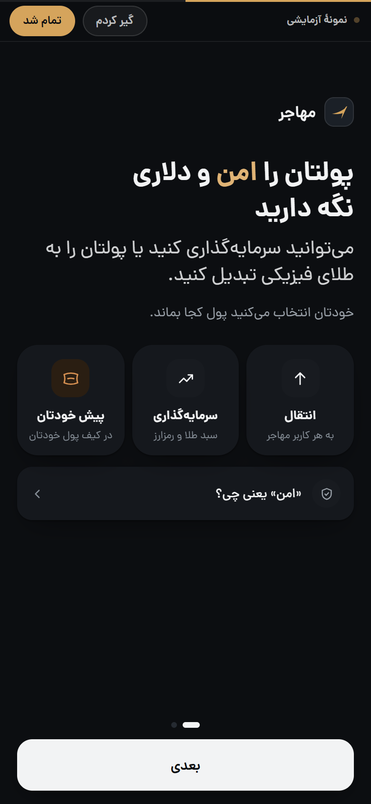
هر ضربه، هر صفحه و هر مکث ثبت میشود
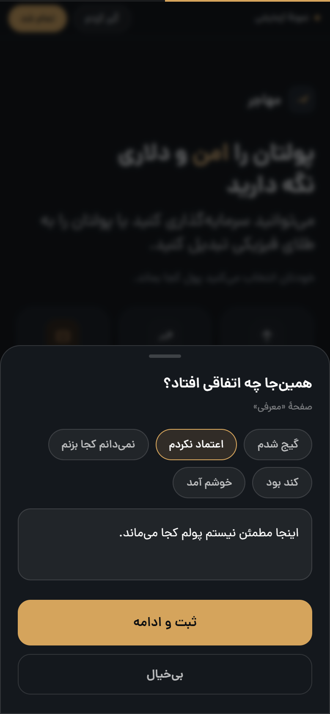
همان لحظه و همان صفحه: حس، و یک جمله
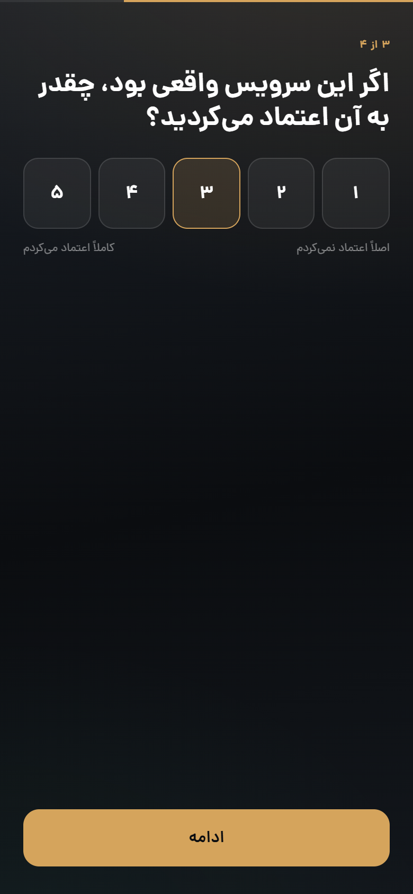
ارزش، جای پول، اعتماد ۱ تا ۵، قدمِ بعد
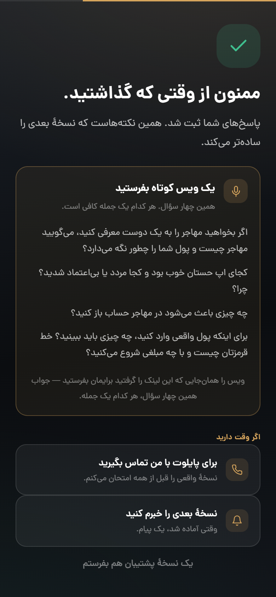
چهار سؤال، حداکثر دو دقیقه
فایلِ صدا روی این دستگاه نیست.
فایلِ صدا روی این دستگاه نیست.
چند ثانیه از هر ویس · راند «تست اول ارسال»، نسخهٔ ۴٫۵ · بینام · از ۶ نفری که به بخشِ ویس رسیدند، ۲ نفر صدا فرستادند
Capability Feasibility Validation · تفکیک قابلیتهای Now از Next و Later
هستهٔ قابل پایلوت؛ مشروط به بستن گیتهای بیتوانا و کنترل مالی
ارزشمند، با گیت مستقل فنی، پارتنری یا امنیتی
Hardware Wallet
خارج از دامنه یا بدون ریل و کنترلِ قابل اتکا
هستهٔ دلار دیجیتال، ورود و خروج ریال، تبدیل، نگهداری، انتقال داخلی، لانههای هدف، تاریخچه و کنترلهای عملیاتی
سبدهای سرمایهگذاری، طلای دیجیتال و تحویل حضوری، کیف پول شخصیِ نرمافزاری؛ تا گیتِ خود را با شاهد واقعی ببندند
شکست یا تأخیرِ سبد، طلا یا کیف پول شخصی، پایلوتِ هسته را متوقف نمیکند.
تجربه، اعتماد، Orchestration، پشتیبانی و نمای یکپارچهٔ دارایی
سه منبع حقیقتِ مستقل، یک نما برای کاربر
Quote، تبدیل، کاستدی آشیانه، Ledger، فروش و تسویهٔ ریالی
طلای تجمیعی نزد پارتنر؛ سهم کاربر در Sub-ledger مهاجر
Self-custody؛ فقط USDT روی TRON میان آشیانه و کیف شخصی
پایلوت پایه میتواند بدون سبد، طلا و کیف پول شخصی آغاز شود.
لانههای هدف روی Ledger اصلیاند؛ جابهجایی لحظهای و بیکارمزد.
کارمزد، سقف، SLA و دارایی پایه تا دادهٔ قطعی TBD.
هیچ قابلیت مالی با پروتوتایپ یا پاسخ شفاهی وارد Now نمیشود؛ شاهد Sandbox لازم است.
مهاجر Hardware Wallet تولید نمیکند؛ دستگاهِ ممیزیپذیر میخرد.
برای پایلوت پایه لازم و با کنترلهای مشخص قابل اجراست.
ارزشمند و در دامنهٔ محصول؛ اما شواهد یا وابستگیهایش کامل نیست.
مکمل تجربه؛ برای اثبات ارزش هسته ضروری نیست.
در شرایط فعلی از نظر ریسک، وابستگی یا پیچیدگی قابل تعهد نیست.
معماری قابل ساخت، API یا SDK، مدل حالت، امنیت، مقیاس و بازیابی
Sandbox، PoC، تست خطا و قرارداد فنی
پشتیبانی، تطبیق، اجرای دستیِ کنترلشده، SLA و Runbook
اجرای سناریوی واقعی و مالک عملیات
تعداد و شدت وابستگی، کنترل مهاجر، جایگزینپذیری شریک
قرارداد، SLA، Data room و مسیر جایگزین
مالکیت دارایی، KYC و SoF، رضایت، مسئولیت زیان، حریم خصوصی
نظر حقوقی، متن قرارداد و افشا
هزینهٔ ساخت و سرویس، کارمزد شریک، حداقل مقیاس، اثر بر حاشیه
Fee sheet، Cost-to-serve و سناریوی حجم
از دست رفتن دارایی، خطای موجودی، سوءبرداشت کاربر، امکان خروج
تطبیق، Proof، receipt و تست خروج
کیفیت دادهٔ موجود برای تصمیم
High شاهد واقعی · Medium قرارداد/PoC · Low فرض
۵ اجرا با ریسک کنترلشده
۳ شدنی، با بستن شکاف
۱ فعلاً بیمسیرِ قابل اتکا
| قابلیت | فنی | عملیات | پارتنر | حقوقی | اقتصادی | اطمینان | تصمیم | |
|---|---|---|---|---|---|---|---|---|
| C01 | ورود، Orientation و افشای اعتماد | ۵ | ۵ | ۵ | ۴ | ۵ | M | Now |
| C02 | KYC، SoF و نگاشت هویت | ۳ | ۳ | ۲ | ۳ | ۴ | M | Now |
| C03 | واریز ریال از حساب همنام | ۴ | ۴ | ۳ | ۴ | ۴ | M | Now |
| C04 | Quote قفلشده و رضایت | ۴ | ۴ | ۳ | ۴ | ۵ | M | Now |
| C05 | تبدیل ریال به دلار دیجیتال | ۴ | ۴ | ۳ | ۴ | ۵ | M | Now |
| C06 | کاستدی آشیانه و Ledger | ۴ | ۳ | ۳ | ۳ | ۴ | M | Now |
| C07 | فروش و تسویهٔ ریالی | ۴ | ۳ | ۳ | ۴ | ۴ | M | Now |
| C08 | تاریخچه، رسید و وضعیت | ۴ | ۵ | ۴ | ۴ | ۵ | H | Now |
| C09 | انتقال داخلی میان کاربران احرازشده | ۴ | ۴ | ۳ | ۴ | ۵ | M | Now |
| C10 | لانهٔ هدف و Sub-balance | ۵ | ۵ | ۵ | ۵ | ۵ | M | Now |
| C11 | پشتیبانی، Case و Escalation | ۵ | ۴ | ۴ | ۴ | ۴ | M | Now |
| C12 | نمای یکپارچهٔ موجودی و Pending | ۴ | ۳ | ۳ | ۴ | ۴ | M | Now |
| C13 | اعلان رویداد و تغییر وضعیت | ۵ | ۵ | ۵ | ۵ | ۵ | H | Now |
| C14 | تطبیق، Audit و کنترل اختلاف | ۴ | ۳ | ۳ | ۴ | ۴ | M | Now |
| C15 | توضیح ماهیت دلار دیجیتال و پشتوانه | ۵ | ۴ | ۴ | ۳ | ۵ | M | Now |
| قابلیت | فنی | عملیات | پارتنر | حقوقی | اقتصادی | اطمینان | تصمیم | |
|---|---|---|---|---|---|---|---|---|
| C28 | سقفها، Risk rules و پنل عملیات | ۴ | ۴ | ۴ | ۴ | ۵ | M | Now |
| C29 | تداوم خدمت و Incident management | ۴ | ۳ | ۳ | ۴ | ۴ | L | Now |
| C30 | Observability و Correlation ID | ۴ | ۴ | ۴ | ۴ | ۴ | M | Now |
| C16 | تعریف سبد، ریسک و Suitability | ۴ | ۳ | ۳ | ۳ | ۳ | L | Next |
| C17 | خرید واقعی سبد چنددارایی | ۳ | ۲ | ۲ | ۳ | ۳ | L | Next |
| C18 | NAV، عملکرد و اجرای جزئی | ۳ | ۳ | ۳ | ۳ | ۳ | L | Next |
| C19 | طلای دیجیتال تجمیعی | ۳ | ۲ | ۱ | ۲ | ۳ | L | Next |
| C20 | رزرو و تحویل حضوری طلای فیزیکی | ۳ | ۲ | ۱ | ۲ | ۲ | L | Next |
| C21 | ساخت کیف پول شخصی نرمافزاری | ۳ | ۳ | ۴ | ۲ | ۳ | L | Next |
| C22 | Recovery و Backup رمزنگاریشده | ۲ | ۲ | ۴ | ۲ | ۲ | L | Next |
| C23 | نمای Watch-only کیف پول شخصی | ۴ | ۴ | ۵ | ۴ | ۴ | M | Next |
| C24 | انتقال USDT از آشیانه به کیف شخصی | ۳ | ۳ | ۲ | ۳ | ۳ | L | Next |
| C25 | انتقال USDT از کیف شخصی به آشیانه | ۲ | ۲ | ۲ | ۳ | ۳ | L | Next |
| C26 | Quote کارمزد و Energy روی TRON | ۲ | ۲ | ۲ | ۳ | ۲ | L | Next |
| C27 | اتصال Hardware Wallet اختیاری | ۲ | ۲ | ۱ | ۲ | ۲ | L | Later |
از نظر فنی شدنی است؛ اما C02 تا C07 بدون Sandbox، قرارداد Ledger و مسیر خروج واقعی، فقط ادامهٔ مشروط دارند.
کموابستگی و در Now؛ به شرطِ آنکه Sub-balance دو منبع حقیقت یا دوبارهشماری نسازد.
از نظر UI آمادهتر از عملیاتاند. مدل اجرای جزئی، NAV، Suitability و مسئول حقوقی وزنها نیست.
بیشترین وابستگی پارتنری. تا انتخاب شریک، اثبات موجودی و تست تحویل، شدنیبودنش مفهومی است، نه اجرایی.
ارزش اعتماد بالایی دارد؛ اما Recovery، Energy، انتقال برگشتی و ممیزی امنیتی هنوز شاهدِ کمی دارند.
هر نوار: امتیازهای همان قابلیتها در پنج معیار (فنی، عملیات، پارتنر، حقوقی، اقتصادی)
مزیت محصول و مالکیت رابطهٔ کاربر
کنترل تجربه؛ کاهش وابستگی مستقیم UI به شریک
سهم کاربر و شواهد تطبیق، مستقل از UI شریک
موتور مستقل در MVP ساخته نمیشود؛ تجربه در مهاجر میماند
استفاده از زیرساخت موجودِ کارفرما
نیازمند بانک و PSP دارای مجوز و تسویه
موجودی، اصالت، شعب و عملیات فیزیکی
پیادهسازی رمزنگاری از صفر ممنوع؛ Open source + Audit
خدمت تخصصی با نیاز به failover
دستگاه آماده و ممیزیپذیر؛ تولید داخلی خارج دامنه
دلار دیجیتال و کنترلهای لازم
C01–C15 · C28–C30
شرط ورود: عبور گیت هویت، Quote، Ledger، خروج، تطبیق و Incident
شرط: تصویب وزن و افشا، اجرای چنددارایی، NAV، کارمزد و تست اجرای جزئی
شرط: انتخاب شریک، قرارداد مالکیت، Proof و تست تحویل
شرط: PoC، ممیزی امنیتی، Recovery، Energy و تطبیق واقعی
شرط: اثبات تقاضا و انتخاب تأمینکننده، پس از موفقیت کیف نرمافزاری
Orientation، توضیح ماهیت دلار دیجیتال، افشای شریک و محل نگهداری، کارمزد و مسیر خروج
KYC، SoF، حساب بانکی همنام، limits و وضعیت Manual Review
Quote قفلشده، رضایت، تبدیل، Ledger، موجودی available و pending
انتقال داخلی، لانهٔ هدف، جابهجایی فوری میان موجودی اصلی و لانه
فروش، Quote خروج، تسویه به حساب همنام، Refund و receipt
Case، اعلان، Audit، reconciliation، limits، Incident و پنل عملیات
نمودار مالکیت، KYC states، حساب همنام و قرارداد ادعای کاربر
Legal، Compliance و ProductQuote نمونه، Expiry، Requote یا Refund و payer match
Product و FinanceAPI موجودی و تاریخچه، snapshot و reconciliation report
Finance و Techتست انتها به انتها، bank reference، SLA و خطای بانکی
Operations و Financeتست دوبارهشماری، atomic move، limits و rollback
Tech و ProductWebhook، idempotency، runbook، manual queue و communication
Tech، Operations و Supportمتن تأییدشدهٔ ماهیت دلار دیجیتال، شریک، دارایی پایه و ریسک
Legal، Product و Research| شکاف | شدت | مالک | شاهدِ بستهشدن |
|---|---|---|---|
| ساختار حساب یا Sub-account در بیتوانا | بحرانی | Tech، Finance و Legal | نمونهٔ Ledger و تست جداسازی کاربر |
| KYC تعبیهشده و reason code | بحرانی | Compliance و Product | Sandbox و سناریوی Manual Review |
| Quote، کارمزد، سقف و Expiry | بحرانی | Finance و Product | Fee sheet و پنج سناریوی Quote |
| Sell و Payout | بحرانی | Operations و Finance | تست واقعی و تطبیق bank reference |
| انتقال داخلی | بالا | Tech و Risk | تست limits، گیرندهٔ اشتباه و برگشتناپذیری |
| دارایی پایهٔ دلار دیجیتال و نسبت پوشش | TBD | Treasury و Risk | سیاست دارایی، snapshot موجودی و متن افشا |
| شکاف | شدت | مالک | شاهدِ بستهشدن |
|---|---|---|---|
| پارتنر طلا | بحرانی · Next B | Partnership و Legal | Shortlist، قرارداد ذخیره و PoC تحویل |
| سبدها و Suitability | بالا · Next A | Product، Risk و Legal | وزن، افشا، حداقل سفارش و اجرای جزئی |
| Recovery کیف پول | بحرانی · Next C | Security و Product | PoC بازیابی و threat model |
| Energy و واریز برگشتی | بحرانی · Next C | Blockchain Engineering | تراکنش واقعی و مدل هزینه |
بستن G1 تا G7، دریافت Sandbox و Fee sheet، تست Quote تا Payout، اصلاح متن اعتماد
Pilot Readiness Packlimits پایین، reconciliation روزانه و Incident review
Evidence Board و تصمیم Scale یا Holdسبد، طلا و کیف پول شخصی؛ هرکدام با گیت و Stop Condition مستقل
تصمیم Pilot یا Redesign برای هر ماژولHardware Wallet، شبکه یا دارایی دوم، پذیرندگی و توسعهٔ جغرافیایی
Roadmap Laterقابلیتهای Now فقط پس از عبور هفت گیت — با سند، Sandbox و تست خروج — وارد پول واقعی میشوند.
از چالشها و شواهد تا تصمیم ورود به بازار: برای چه کسی، با چه پیامی، از کدام راه
مردم به نگهداری و خروج پولشان مطمئن نیستند
ابزارهایشان برای کسی که فقط میخواهد ارزش پولش را نگه دارد، پیچیده است
با منطقِ معاملهمحورِ صرافیهای فعلی همخوان نیست
سادهتر و شفافتر شد؛ روندش در بخش محصول گفته شد
کیست؟ اقدام واقعی برای حفظ ارزش دارد، توان مالی مناسب دارد، ولی از ابزار دیجیتال کم یا با تردید استفاده میکند. نمونهٔ دسترسی (فرضیه): پزشک، مدیر، صاحب کسبوکار.
چرا او؟ مسئلهاش پیچیدگی و اعتماد است، نه نبود ابزار.
برمیگردیم اگر: پذیرش دارایی دیجیتال محدود بماند یا هزینهٔ اعتمادسازی ساختاری بالا برود.
کیست؟ کاربر دیجیتال با سابقهٔ مدیریت چند دارایی که ابزار جایگزین دارد.
چرا نگهش داریم؟ جلوی سوگیری تأیید را میگیرد. جایگزین S3 اگر: با CAC و کیفیت واریز بهتر برسد.
چرا دو محور؟ تعریفهای قبلی همپوشانی داشتند و برتری Scorecard شکننده بود. زیر هر سگمنت، سه طبقهٔ اقتصادی مدل مالی مینشیند؛ هدف عملی S3: بازار انبوه تا توانگر بالا.
لینک و کد دعوت = ظرفیت، منشأ جذب و آزمون در دست ماست
ورود موجی، نه یکباره؛ KYC، تسویه و برداشت زیر فشار محدود سنجیده میشود
کد، ابزار کنترل دسترسی است؛ نه پاداش و نه جایگزین KYC
بزرگترین چالش، اعتماد بود؛ اعتماد از آدم منتقل میشود، نه از تبلیغ: Human Trust Bridge
برای S3 معرفی انسانی؛ برای S2 مسیر مشابه، تا اثر کانال از اثر سگمنت جدا شود
اثرش با کانال غیررفرال مقایسه و سنجیده میشود
جای هر گروه روی منحنی برآورد تیم است، نه اندازهگیری؛ درصدها مدل نظری Rogers است، نه دادهٔ بازار ایران.
| S3 · نقطهٔ شروع | S2 · گروه مقایسه | |
|---|---|---|
| انگیزهٔ انتخاب | ارزش پولم را بیپیچیدگی و با دانستن جای آن نگه دارم | تجربهای منسجمتر از ابزارهایی که الان دارم |
| مانع اصلی | فهم نگهداری، اعتماد، پذیرش دارایی دیجیتال | هزینهٔ تغییر، مقایسهٔ نرخ و امکانات |
| پیام اول | ساده و شفاف: پولت کجاست و چطور برمیگردد | مدیریت چنددارایی با هزینه و وضعیت روشن |
| کانال و پیامرسان | معرفی معتبر، بعد اجتماع حرفهای؛ فرد معتمد یا همحرفهای | اجتماعات مالی دیجیتال؛ همان مسیر معرفی برای کنترل مقایسه |
| رسانه و فرمت | گفتوگوی یکبهیک، نشست کوچک، صفحهٔ توضیح اعتماد، پرسشوپاسخ | محتوای مقایسهای کوتاه، صفحهٔ کارمزد و قابلیتها |
| مقیاس و سرعت | کندتر و ظرفیتمحدود؛ اعتماد از مرجع شخصی میآید | سریعتر و پراکندهتر؛ ابزار جایگزین همیشه در دسترس است |
| معیار موفقیت | Qualified → First Funding، فهم نگهدارنده، هزینهٔ پشتیبانی | دلیل اولین واریز، مانع تغییر، CAC تا واریز |
این تفاوتها با آزمون سهبازویی سنجیده میشوند.
برای کسی که ارزش پولش را حفظ میکند اما ابزار دیجیتال را پیچیده یا نامطمئن میبیند، مهاجر راه ساده و شفاف تبدیل و مدیریت دلار دیجیتال است؛ برخلاف ابزارهای معاملهمحور، پیش از ورود پول نشان میدهد پول کجا میماند و چطور خارج میشود.
از دلار دیجیتال شروع کن؛ چند قدم، بدون پیچیدگی صرافی
اثبات: مسیر تبدیل که در تستها قابلانجام بودپیش از تأیید، نرخ، کارمزد و نتیجهٔ خالص را ببین
اثبات: Quote پیش از تأیید + رضایت صریح · Backed & Traceableبدان پولت کجا میماند، چه کسی نگه میدارد و چطور خارج میشود
اثبات: صفحهٔ نگهدارنده و شریک، رسید، مسیر خروج، پشتیبانی انسانی · Proof Before Money«اصل سرمایه تضمینشده»
«سود بدون ریسک»
«امنیت مطلق»
«همیشه فوری برداشت کن»
«بدون کارمزد»
| لحظهٔ سفر | پیام S3 · روشنبودن | پیام S2 · مقایسه | اثبات و فراخوان |
|---|---|---|---|
| آشنایی | راهی سادهتر برای مدیریت ارزش | تجربهٔ منسجمتر مدیریت چنددارایی | صفحهٔ معرفی؛ درخواست دسترسی |
| ارزیابی اعتماد | پول و دارایی کجا نگهداری میشود؟ | تفاوت حقوق، کنترل و کارمزد چیست؟ | توضیح شریک، شرایط، محدودیتها |
| دعوت و فعالسازی | دسترسی مرحلهای، بدون شتاب | تجربهٔ واقعی با شروط شفاف | دعوت، KYC، مراحل قابلمشاهده |
| پیش از واریز | کارمزد، نتیجه و خروج قابلفهم | مقایسهٔ ارزش استفاده و هزینه | Quote و تأیید صریح |
| بعد از واریز | دسترسی روشن به دارایی و پشتیبانی | امکانات مکمل متناسب با نیاز | رسید، موجودی، پیام رفتارمحور |
دسترسی منتخب، سقف مبلغ، تست خروج واقعی
هدف: سلامت پول، نه ظرفیت بازارموجهای دعوت از شبکههای معتبر و مستقل؛ S3 همحرفهای
گیت W8: شش شرطاجتماع حرفهای و محتوا؛ مقایسهٔ S2/S3 و رفرال/غیررفرال
بدون واسطهٔ شخصی هم کار میکند؟افزایش سهمیهٔ کانالهای موفق؛ کوهورت ۶۰ و ۹۰ روزه
تصویب حجم و بودجه، جداحذف دعوتمحوری برای واجدان شرایط، فقط پس از گیت مستقل
گیت جداگانهحدود ۱۵ تا ۲۰ نفر واجد شرایط در هر بازو، فقط برای یادگیری؛ توان آماری برای تفاوت کوچک ندارد.
دو سنجهٔ جدای CAC: تا اولین واریز، و تا فعالِ ماه اول · نگهداشت سهگانه: مانده، واریز، فعالیت · اعتماد با پرسش فهم، نه بازدید صفحه
آزمون سهبازویی S3 و S2
لانچ دعوتمحور با موجهای ظرفیتدار
گیت هفتهٔ هشتم و گسترش مرحلهای
اندازهگیری CAC و کیفیت واریز
Primary TPV در این سناریو، ورودیِ جدیدِ سرمایه فرض شده است.
برداشت ریالی و استفادههای ثانویه دوباره به حجم اصلی اضافه نمیشوند.
این حجمها هدفِ مدلاند، نه تقاضای اثباتشده یا عملکرد واقعی.
کارمزد ورود و تبدیل خروج ریالی، هر کدام ۰٫۲۵٪ از حجمِ مربوط به خود
B2B از سال ۲: پوشش ۲۰٪ حجم با کارمزد ۰٫۳۵٪؛ فرض تجاریِ نیازمند قرارداد
حجم خروج بر اساس موجودیِ انباشته و فرضهای نگهداشت محاسبه میشود، نه یک درصد ثابت از ورودیِ همان سال.
| شاخص · هزار USD | سال ۱ | سال ۲ | سال ۳ |
|---|---|---|---|
| OPEX نقدی مهاجر | ۲۵۰٫۳ | ۳۷۲٫۰ | ۴۵۸٫۰ |
| از آن: حقوق و مزایا | ۱۳۳٫۳ | ۱۶۹٫۸ | ۲۰۲٫۰ |
| از آن: جذب مستقیم | ۷۰٫۳ | ۱۳۲٫۳ | ۱۶۶٫۴ |
| تخصیص اقتصادی منابع بیتوانا خارج از OPEX نقدیِ بالا | ۷۰٫۸ | ۱۱۳٫۸ | ۱۵۵٫۴ |
KYC، ابر، ممیزی بیرونی و نقشهای ستادی از منابع مشترک بیتوانا تأمین میشوند.
حقوق دلاری است؛ ضریب ۱٫۱ فقط بونس و مزایاست.
صفر بودنِ هزینهٔ نقدیِ خدمات مشترک، به تأیید ظرفیت و SLA وابسته است.
دو ردیف «از آن» زیرمجموعهٔ OPEXاند و دوباره جمع نمیشوند.
| شاخص · هزار USD | سال ۱ | سال ۲ | سال ۳ |
|---|---|---|---|
| جمع درآمد، شامل B2B و تبدیل خروج | ۱۲۶٫۳ | ۵۷۱٫۴ | ۱٬۱۸۹٫۰ |
| هزینهٔ مستقیم ورودی و سایر خدمات | (۱۶٫۳) | (۶۱٫۲) | (۱۲۲٫۵) |
| هزینهٔ مستقیم تبدیل خروج | (۱٫۳) | (۸٫۵) | (۲۳٫۶) |
| جمع هزینهٔ مستقیم خدمت | (۱۷٫۶) | (۶۹٫۸) | (۱۴۶٫۰) |
| سود مشارکت | ۱۰۸٫۶ | ۵۰۱٫۶ | ۱٬۰۴۲٫۹ |
| OPEX نقدی | (۲۵۰٫۳) | (۳۷۲٫۰) | (۴۵۸٫۰) |
| نتیجهٔ عملیاتی نقدی | (۱۴۱٫۶) | ۱۲۹٫۷ | ۵۸۴٫۹ |
| تجمعی پس از پیشلانچ/CAPEX، بدون ذخیره | (۲۲۲٫۲) | (۹۷٫۵) | ۴۸۲٫۴ |
| معیار | بدون ذخیرهٔ تسویه | با ذخیرهٔ تسویهٔ پایه |
|---|---|---|
| تجمعی پایان ۳۶ ماه · هزار USD | ۴۸۲٫۴ | (۴۴۴٫۹) |
| NPV با نرخ سالانهٔ دلاری ۱۰٪ · هزار USD | ۳۴۰٫۱ | (۴۴۲٫۱) |
| IRR سالانهٔ مؤثر | ۶۹٫۶۰٪ | (۴۸٫۵۱٪) |
| اوج کسری قبل از حاشیه · هزار USD | ۲۴۱٫۴ | ۶۳۸٫۸ |
| نیاز تأمین با حاشیهٔ ۲۰٪ · هزار USD | ۲۸۹٫۷ | ۷۶۶٫۵ |
دارایی مشتری منبع تأمین هزینهٔ شرکت نیست. افزایش ذخیره هزینهٔ P&L نیست، اما پولِ قابل استفادهٔ پروژه را کاهش میدهد.
| موضوع باز | خروجیِ موردنیاز برای تصمیم |
|---|---|
| حجم و رفتار سرمایه | دادهٔ واریز واقعی، برداشت ریالی، مانده و نگهداشتِ هر سگمنت |
| جذب و معرفی کاربران | CAC مشاهدهشده و سهم ارگانیکِ واقعی؛ کاهش CAC فعلاً فرض است |
| درآمد B2B | تأیید تجاریِ پوشش حجم، نرخ و زمان شروع |
| خدمات مشترک | توافق ظرفیت، مسئولیت، SLA و هزینهٔ افزایشیِ بیتوانا |
| خزانه و ریسکهای خارج مدل | روز تسویه، روش تأمین ذخیره، و بررسی مالیات و سرمایهٔ الزامی |
| شاخص | سال ۱ | سال ۲ | سال ۳ |
|---|---|---|---|
| خروج ریالی · میلیون USD | ۳٫۶۸ | ۲۴٫۴۲ | ۶۷٫۲۹ |
| خروج به ورودیِ همان سال | ۱۳٫۵۳٪ | ۲۳٫۹۲٪ | ۳۲٫۹۶٪ |
| هزینهٔ مستقیم خروج · هزار USD | ۱٫۲۹ | ۸٫۵۵ | ۲۳٫۵۵ |
نگهداشت سالانهٔ سگمنتها ۴۰٪، ۶۰٪ و ۷۵٪.
ماهانه ۵۰٪ موجودیِ ریزشیافته خارج میشود و ۷۵٪ این خروج، ریالی است. از موجودیِ فعالِ حفظشده ۳٪ برداشت ریالی میشود.
واریز جدید انتهای ماه اضافه میشود؛ موجودیِ غیرفعال میماند و خروج مجدد از آن فرض نشده است.
| USD بهازای هر فعالِ جدید | سال ۱ | سال ۲ | سال ۳ |
|---|---|---|---|
| CAC مستقیم | ۶٫۶۵ | ۵٫۰۱ | ۴٫۱۸ |
| CAC کامل | ۸٫۸۶ | ۶٫۱۸ | ۵٫۱۵ |
CAC مستقیم: رسانه و پاداش معرفی. CAC کامل: بهعلاوهٔ سهم حقوق رشد و خلاقهٔ جذب. KYC در پایه از منابع مشترک تأمین میشود.
معرفی پس از عبور MAU از ۱۰ هزار و با تأخیر، در پایه از ماه ۱۵ آغاز میشود و طی ۶ ماه به ۴۰٪ میرسد. پاداش هر فعالِ معرفیشده ۱ USD.
این کاهشِ CAC اثبات تجربی نشده است.
| معیار | بدون ذخیرهٔ تسویه | با ذخیرهٔ تسویه |
|---|---|---|
| NPV · هزار USD | ۳۴۰٫۱ | (۴۴۲٫۱) |
| IRR سالانه | ۶۹٫۶۰٪ | (۴۸٫۵۱٪) |
نرخ تنزیل دلاریِ سالانه ۱۰٪ فرضِ انتظار بازده است، نه WACC برآوردشده.
نرخ تنزیل، IRR را تغییر نمیدهد.
پساندازتان را دلاری کنید؛ همهاش را به یک جا نسپارید.